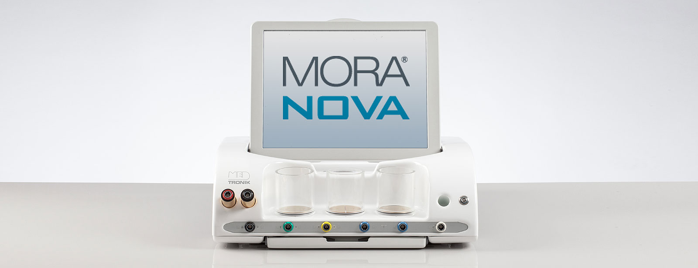
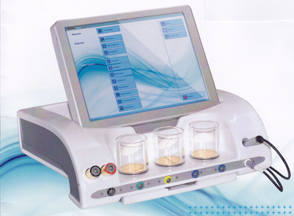

MORA TERÁPIA:

2016 októberétől rendelőnkben a legújabb fejlesztésű MORA NOVA készülékekkel dolgozunk.
A XX. század végének forradalmi előrelépése a gyógyításban a mikromagnetikus terápia. Mind a kozmikus, mind pedig a földi világunk állandóan változó, kölcsönösen egymásra ható rezgéshalmazokból épül fel. Az emberi szervezet ezen rezgéseinek mérésén alapul a Mora diagnosztika és terápia, mely a szervezet energetikáját harmonizálja azáltal, hogy a kóros rezgéseket kioltja s a szervezet öngyógyító mechanizmusát beindítja.
A Mora Super Bipolar diagnosztikus és terápiás készülék segítségével rövid idő alatt teljes képet nyerhetünk a szervezet egészének energetikai állapotáról, az energiakeringés zavarairól, a Yin-Yang egyensúly aktuális helyzetéről.
A rezgésinformációk számítógépes feldolgozása, elektroakupunktúrás mérésekkel kombinálva további diagnosztikus lehetőségeket nyit meg a vizsgáló számára, úgymint:
- meridiánok és testszegmensek energetikai mérése,
- Yin- Yang egyensúly beállítása,
- allergia teszt sok száz programozott allergén, valamint korlátlan számú hozott allergén vizsgálata,
- a szervezet sav-bázis viszonyainak mérése,
- gomba teszt,
- geoteszt (a földsugárzás károsító hatásának mérése),
5-elem teszt, - ásványi sók, vitaminok, kémiai elemek teszt-je, -Bach-virág teszt, fogteszt program (gócvizsgálat, amalgám terhelés, fogászati anyagok összeférhetetlenségének vizsgálata),
- nozóda teszt,
- meridián teszt,
- gyógyszer teszt.
A tesztek elvégzése után számtalan kezelési lehetőség áll az orvos rendelkezésére, melyet vagy automatikus program szerint, vagy pedig a beteg aktuális állapotának megfelelően egyénre szabottan, az orvos által meghatározott frekvencia beállítással futtathatunk le.
A beteg két kéz és két lábelektróda segítségével állandó összeköttetésben áll a készülékkel, így a szervezet energetikai állapota a kezelés alatt folyamatosan monitorozható.
A terápia mellékhatás- és fájdalom mentes, megterhelést nem jelent a szervezet számára, így kisgyermekeknél is jól alkalmazható.
Mire jó a Mora?
A Mora diagnosztikus és terápiás egység a következőkre használható:
Voll féle EAV-on alapuló, reprodukálható technikákkal kiegészített teljes körű elektroakupunktúrás állapot felmérés.
Gyógyszertesztelés: a szervezet számára optimális anyagok kiválasztására.
A betegségek rejtett okainak kimutatására szolgál a geopátia és allergia, kötőszöveti terhelés, sav-bázis egyensúly vizsgálat.
Elektronikus homeopátia ( ELH )
A Mora Super interface lehetővé teszi az anyag-információ tárolását és előhívását diagnosztikai és terápiás célra.
Az adatbank a következő anyag csoportokat tartalmazza:
- étel-, inhalatív- allergének, kórokozók,
- fogászati anyagok,
- orthomolekuláris anyagok,
- kémiai elemek,
- sav- bázis egyensúly,
- színterápia,
- nozodák,
- homeopátiás szerek preparátumai,
- patogén gombák,
- Bach virágok,
- Schüszler sók,
- csakra-teszt,
- környezeti toxinok.
Több mint 20 000 anyag információ szolgál a diagnózisra és a terápiára.
ÚJ LEHETŐSÉG AZ ALLERGIA GYÓGYÍTÁSÁBAN!
Korunk népbetegsége az allergia, amely évről évre egyre nagyobb hányadát érinti a lakosságnak. Egy amerikai felmérés szerint a lakosság 20% a valamilyen allergiás megbetegedésben szenved.
Van akinek nincs is szinte tudomása róla, esetleg csak véletlenül derül ki, másoknak enyhe panaszokat okoz, míg megint másoknak olyan súlyosak a tünetei, hogy befolyásolják mindennapi életvitelüket.
Az allergia kialakulásában szerepet játszik a helytelen táplálkozás, a nagyfokú környezetszennyezés (talaj, levegő, folyó- és állóvizek szennyezése), amelyek mind az immunrendszerünket gyengítik, és okozzák a mindannyiunk által jól ismert, kellemetlen tüneteket.
Az inhalációs allergének által okozott tünetek: a köhögés, tüsszögés, orrfolyás, szemvörösség és könnyezés. Az ételallergia által kiváltott tünetek azonnali típusú allergia esetén: csalánkiütés, ekzema, arc és ajkak duzzanata, esetleg (szerencsére ritkán) anaphylaxiás shock. A késleltetett típusú ételallergia azonban változatos és megtévesztő, egyéb betegségekre hasonlító tünetekkel jelentkezhet, úgymint: migrén szerű fejfájás, emésztési zavar, fáradtság, depresszió, izületi fájdalom, visszatérő hasi fájdalmak, légzési zavarok, hörghurut, bélpanaszok, éjjeli ágybavizelés, hasmenés vagy székrekedés. Ezt a típusú élelmiszer allergiát gyakran nem ismerik fel, mert nehéz a tüneteket a késleltetett megjelenés miatt kapcsolatba hozni az adott élelmiszerrel.
A Mora Super Bipolar készülékkel lehetőség nyílik több száz számítógépbe programozott allergén tesztelésére igen rövid idő alatt, fájdalom mentesen. A tesztmérés elektorakupunktúrás méréssel történik és a számítógépbe programozott allergéneken kívül gyakorlatilag korlátlan számú behozott anyagminta bemérhető, ha felmerül az oki szerepe az allergia kiváltásában. Ily módon házipor, tisztító- és kozmetikai szerek, élelmiszerek, vegyszerek, szervezetbe beültetendő anyagok előzetesen tesztelhetőek, fennáll-e velük szemben az összeférhetetlenség.
Kitesztelt allergia esetén oki kezelésre is lehetőség nyílik. A szervezetben lévő kóros elektromágneses hullámokat a készülék regisztrálja, az interferencia elve alapján pedig kioltja. Ily módon nyílik lehetőség az allergia végleges kioltására, szemben a gyógyszeres kezeléssel, amely magát az allergiát nem, hanem az allergia által kiváltott tüneteket mérsékli, vagy szünteti meg.
A Mora terápia tehát egyesíti az ősi kínai gyógymódot a legkorszerűbb biokibernetikai rendszerrel, hogy a szervezet saját elektromágneses rezgéseinek szabályozásával helyreállítsa testünk önszabályozó mechanizmusát.
MORA TERÁPIA A GOMBÁS BETEGSÉGEK KEZELÉSÉBEN!
Az emberi szervezet gombás fertőzései nagy kihívást, és bizony sokszor komoly terápiás problémát jelentenek a hagyományos orvoslás számára.
Az antibiotikumok alkalmazásának elterjedésével az utóbbi időben ugrásszerűen megszaporodtak. A gombás fertőzések, különösen a Candida albicans okozta- fertőzés mivel nagyon változatos, látszólag összefüggéstelen panaszokat tartanak fenn, sokszor diagnosztikai nehézség elé állítják az orvosokat.
Az alábbi önteszt elvégzésekor, ha a felsorolt tünetek közül legalább tízet felismer önmagán, nagy a gombás fertőzés valószínűsége.
- látási zavarok,
- kedélyhullámzás,
- emlékezetzavar,
- nyelvlepedék,
- allergiás reakciók,
- fáradtságérzet,
- alvászavarok,
- gyakori húgyúti fertőzések,
- gyakori vizelési inger,
- hasi görcsök,
- székrekedés,
- puffadás,
- szem- és orrviszketés,
- végbéltáji viszketés,
- édesség után vágy.
A Mora program közel 40 féle gomba elektromágneses információját tartalmazza, így ennek segítségével rövid idő alatt, fájdalommentesen tesztelhető, fennáll-e a gombás infekció veszélye.
A Mora terápiával, szigorú diéta betartása mellett, lehetőség nyílik a fennálló betegség gyógyítására is. Ily módon évtizedek óta fennálló, kellemetlen, makacs tünetektől sikerül a betegeket megszabadítani.
Candida diéta rendelhető a vegyszermentes ételszállítónknál: http://www.biomano.hu
TÖBBSZÖRÖS KÉMIAI TÚLÉRZÉKENYSÉG
Többszörös Kémiai Túlérzékenység (TKT)
Amerikában 1951-től ismerik, kutatják MCS-ként (Multiple Chemical Sensitivity) azt a tünet együttest, amit a környezeti (életölő peszticidek, nehézfémek, lakás- és ipari-) mérgek idéznek elő az arra érzékeny embereken. 1994-ben az Európa Unio is felvette kutatási listájára ezt a fontos témát.
A betegek egyidejűleg fennálló szerteágazó panaszokkal jelentkeznek, ami allergiaszerű, vagy pszichés betegség gyanúját kelti. Azonban a tünetek pontosan nem egyeznek a felmerült kórképekkel, valamint az ilyen betegségek gyógyítására használt gyógyszerek többnyire hatástalanok.
A TÜNETEK: szem körüli vörös, vagy barna karikák, szemhéj duzzanat, égő érzés a szemben, szemhéjakban, ugyanitt viszketés is.
Szagérzékenység, vagy a szaglás csökkenése tartósan vagy átmenetileg. Bőrtünetek: viszkető, égő érzés körülírtan vagy kiterjedten, vörös foltok váratlan megjelenése és elmúlása. Aknészerű, nehezen elmulasztható bőrjelenségek az arcon, ritkábban nem típusos kiütések a törzsön. Migrén, alvászavar, testsúly ingadozás, a menstruációs ciklus és vagy a szexuális funkció zavarai, reumaszerű fájdalmak, annak típusos izületi jelenségei nélkül. Főleg gyermekeken csontfájdalmak, amit "növekedési fájdalmaknak" szoktak nevezni. Torokfájdalom, nyelési panaszok, rekedtség, hajlam felső légúti gyulladásszerű tünetekre, pajzsmirigy, tüdő vagy vesebetegség gyanúját keltő panaszok. Előfordulhatnak "majdnem ájulás szerű" rosszullétek.
A pszichés tünetek közül a hangulati élet labilitása, melankólia, hirtelen indulati kitörések, levertség, depresszió, szorongás, félelmek, pánik jelenségek. Fokozatosan állandósul egy testi- szellemi fáradtság érzése, majd ugyanazt a teljesítményt csak a korábbinál sokkal nagyobb erőfeszítéssel lehet elérni. Feledékenység, emlékezet gyengülés is jelentkezhet. A betegek tünetei a felsoroltakból egyénileg állnak össze.
A TKT / MCS nem pszichés megbetegedés, hanem olyan betegség, amit a kémiai károsító anyagokkal megterhelt környezet vált ki az arra érzékenyekből. Nem is valódi allergia, mert a vegyszerekkel való összeférhetetlenség nem is tekinthető allergiának. Ezek a környezeti ártalmak hosszú ideig csendben hatnak, amíg a szervezet még egyensúlyban van velük.
A TKT tünet együttesét kiváltó környezeti mérgek a MORA Super Bipolar allergia- és összeférhetetlenség tesztjében szerepelnek, mérhetőek, MORA kezeléssel a szervezetből eltávolíthatók.
Vegyszermentes ételszállítónk: http://www.manobio.hu
A MORA TERÁPIA SZEREPE A MIGRÉN KEZELÉSÉBEN
A fejfájás leggyakrabban valamilyen megbetegedés kísérő tüneteként jelentkezik. Helytelen lenne hosszú távon fájdalomcsillapítókkal küzdeni ellene, ahelyett, hogy a kiváltó okot próbálnánk felderíteni. A migrén a fejfájásnak egy nagyon jellegzetes megnyilvánulási formája.
A migrénes rohamot a váratlan fellépés, féloldaliság jellemzi. Társulhat látászavarral, hányingerrel, hányással is. Lezajlása után gyakran fokozott vizeletürítés jelentkezik. A MORA kezelést a migrén alapos belgyógyászati kivizsgálása előzze meg. A migrén oka az agyi erek görcsös összehúzódása, mely rohamszerűen jelentkezik. Kiváltó oka lehet stressz, időjárási fronthatás, nők menstruációs ciklusa, alkoholfogyasztás, dohányzás... stb.
Mit tehetünk ellene? Ha feltárjuk a kiváltó okot, védekezni is könnyebben tudunk ellene.
Ebben segíthet a MORA terápia, az új fejlesztések eredménye képpen a Super-Amp kiegészítő, erősítő használatával.
A MORA Super Bipolar készülék segítségünkre van a betegség kiváltó okainak felderítésében, ezt követően pedig a kezelésben. A fájdalommentes kezelés során beindul a szervezet öngyógyító mechanizmusa.
Évtizedek óta fennálló panaszoktól szabadulhatnak meg ily módon a betegek.
NŐGYÓGYÁSZATI PANASZOK KEZELÉSE MORA TERÁPIÁVAL
A nők nagy része szenved a havi ciklus rendellenességei miatt.
Ezek a rendellenességek lehetnek különböző vérzészavarok, úgymint: túl bőséges, vagy túl gyenge vérzés, elhúzódó vérzés, szabálytalan ciklus (normálisnál hosszabb vagy rövidebb).
A MORA terápia segítségével kiválóan kezelhetőek a menstruációt kísérő kellemetlen tünetek, mint a fejfájás, rossz közérzet, ingerlékenység, hasi görcsök, végtagduzzanat. A rendszertelen havivérzések a kezelések hatására rendszeressé válnak. Sikeresen alkalmazható a MORA terápia a kisebb méretű nőgyógyászati ciszták kezelésében is, hatására a ciszta rendszerint megkisebbedik, az általa fenntartott panaszok csökkennek.
A MORA terápiával jól gyógyíthatók a klimax, azaz a változó kor okozta panaszok is.
A klimax általában a kontinentális éghajlaton 45-55 év között jelentkezik a menstruációs vérzés elmaradásával, melynek hátterében a szervezet hormonháztartásának változása áll.
Egy-egy vérzés kimaradásával párhuzamosan, jellegzetes, igen kellemetlen kísérő tünetek léphetnek fel. Ezek a fizikai tünetek (váratlan hőhullámok, izzadás, migrén-szerű fejfájás, hangulati ingadozás, fáradékonyság, valamint az oestrogen hiány miatt fellépő csontritkulás) legalább annyi kellemetlenséget okoznak a változás korába lépő nőknek, mint amekkora pszihés megterhelést jelent a több évtizedes menstruációs ciklus megszűnése.
Hormonkészítmények szedése nélkül, a mellékhatás mentes homeopathiás készítmények és a MORA kezelések hatékonyan csökkentik a klimax okozta panaszokat, s megkönnyítik ennek a sokak számára nehéz időszaknak az átvészelését.
MORA TERÁPIA A MOZGÁSSZERVI MEGBETEGEDÉSEKBEN
Korunk egyik népbetegsége, az allergia mellett, a mozgásszervi megbetegedés. Szinte alig van olyan ember, aki ne szenvedett volna - ha csak átmeneti jelleggel is - valamilyen ízületi- vagy gerincfájdalomtól.
A fájdalom, mely gyakran éles, hasogató jellegű; zavarhatja az éjszakai pihenést. Máskor úgynevezett indítási fájdalomként jelentkezik, azaz pihenés után jelentkezik a legintenzívebben, majd a mozgás során lassan csökken, és végül megszűnik. Előfordul, hogy a fájdalom állandósul.
A fájdalom mellett szembeötlő lehet az érintett testrész alakváltozása, deformálódása, mely többnyire együtt jár az izületek mozgáskorlátozottságával is, mely gyakran mozgásképtelenséghez vezet.
Súlyos esetben (arthrosis, reumás sokizületi gyulladás, stb) a mozgás korlátozottság állandósulhat is.
A mozgásszervi megbetegedések okai különbözőek lehetnek. Fiatal korban fertőzések, anyagcserezavar, az immunrendszer megbetegedései, a szervezetben lévő rejtett gócok okozhatnak izületi gyulladást (idült mandulagyulladás, epehólyag gyulladás, nőgyógyászati gócok). Mit tehetünk ellene? Hogyan csökkenthetjük a mozgásszervi fájdalmakat, hogyan kerülhetjük el a szövődmények kialakulását?
Ebben segíthet a MORA terápia.
Vegyszermentes ételszállítónk: http://www.manobio.hu
MORA TERÁPIA AZ ÉRRENDSZERI MEGBETEGEDÉSEKBEN
A szív- és érrendszeri megbetegedések előkelő helyet foglalnak el mind a megbetegedési, mind pedig az elhalálozási statisztikákban.
Kialakulásukban több tényezőnek is szerepe van, úgymint veleszületett hajlam (magasvérnyomás, visszértágulat), helytelen táplálkozás, dohányzás, túlzott alkohol fogyasztás, mozgásszegény életmód, gyakori stresszhatás.
Az artériás (verőeres) megbetegedések közül leggyakoribb az érelmeszesedés, mely különböző kórformákhoz vezethet:
A szív koszorús ereinek szűkülete mellkasi nyomás érzést, fulladást, úgynevezett anginás panaszokat, legsúlyosabb esetben szívizom elhalást, infarktust okoz.
A láb artériáinak elmeszesedése járási nehézséget, alszár fájdalmat, a bőr lilás elszíneződését, fekély képződést eredményezhet.
Az agyi erek szűkületének feledékenység, elbutulás, szédülés, súlyos esetben agyvérzés lehet a következménye.
A vénák megbetegedései leggyakrabban az alsó végtagokon okoznak kellemetlen, máskor súlyos tüneteket. Kezdetben a kitágult vénák csak esztétikai problémát jelentenek, később társul hozzá a nyirokkeringés elégtelensége, a végtag dagadása (vizenyő). Fokozott terheléskor a vénák kötegessé, fájdalmassá válhatnak, felületes, vagy mélyvénás gyulladás alakulhat ki. Az ismétlődő gyulladások következtében nehezen gyógyuló fekély alakulhat ki a végtagon.
Mit tehetünk ellene? Hogyan kerüljük el az érrendszeri betegségek szövődményeit? Az életmódbeli változtatások mellett kiegészítő gyógymódot jelenthet a MORA terápia.
A BIORITMUS
A bioritmus születésünk pillanatától végigkísér bennünket 23 napos fizikai, 28 napos lelki, és 33 napos intelligencia ritmusával. Mindhárom ritmus szinuszgörbét ír le, azaz egy negyed periódus után eléri a + 100 %-ot, majd a görbe elindul lefelé. A következő negyed periódus után eléri a nulla vonalat, ezt követően átfordul mínuszba. A harmadik negyedben eléri a -100 %-ot, majd az utolsó negyedben újra a nulla vonalat.
A fizikai ritmus férfias vitalitást, erőt és kitartást képvisel. A lelki ritmus a nőiességet, érzelmi életet képviseli, míg az intelligencia ritmus a kreativitást, ötletgazdagságot, intellektuális feladatmegoldást jellemzi.
A bioritmus elmélet szerint a pozitív fázisban energiánk, teljesítőképességünk nagyobb, itt tudunk maximális teljesítményt kifejteni. Könnyebben megoldjuk azokat a feladatokat, melyek a bioritmus negatív szakaszában már nehézséget jelentenek.
A bioritmus negatív fázisa a szervezet alacsonyabb működési szintjét jelzi. A legkritikusabb időpont, amikor a ciklus előjelet változtat, azaz a pozitívból negatív fázisba lép, és fordítva. Statisztikai adatok szerint az üzemi és közlekedési balesetet szenvedők nagy százaléka éppen ezen a kritikus napon esik a baleset áldozatául. Más adatok szerint az elhalálozások 80%-a is erre a kritikus napra esik. Ezeken a napokon érzékenyebbek vagyunk az időjárási frontokra, reakcióidőnk megnő, ítélőképességünk csökken.
A bioritmus program szerint a születési időpont birtokában a kritikus napjaink előre kiszámíthatóak. A fizikailag kritikus napokon nem célszerű szervezetünket fokozott erőpróbának kitenni, ha nem életmentő beavatkozásról van szó, kerüljük a műtéti beavatkozásokat, hiszen ilyenkor erősebb a műtéti vérzés, lassabb a sebgyógyulás, csökkent a fájdalommal szembeni tolerancia.
A szellemi ritmus kritikus napjain figyelmetlenebbek vagyunk, kerüljük ilyenkor a fokozott szellemi koncentrációt igénylő feladatokat, pl. a hosszas autóvezetést.
Az egyes emberek bioritmusának összehasonlításával megbízható információkhoz juthatunk egy vagy több ember egymáshoz való alkalmazkodásának lehetőségeiről is, ily módon lehetőség nyílik a konfliktushelyzetek elkerülésére.
A bioritmus szerinti kezelésre lehetőséget nyújt a MORA Super Bipolar készülék. Ennek hatása néhány óráig tart, ami alkalmas a fokozott igénybevétellel járó megterhelések (műtét, vizsga, tárgyalás, stb.) kivédésére.
MIT TUD ÖN KÁROS SZENVEDÉLYÉRŐL, A DOHÁNYZÁSRÓL?
Az utóbbi évek hazai statisztikai adatai alapján a daganatos megbetegedések száma évről évre kétségbeejtően nő. A tüdőrák vezető halálok Magyarországon, a tüdőrákban megbetegedettek 90%-a dohányzik vagy passzív dohányos!
Nem lehet eléggé hangsúlyozni a dohányzás egészségre gyakorolt káros hatásait.
Tudja-e ön, hogy a dohányzás roncsolja a tüdőt, megbetegítheti a gyomrot, a szívet és testünk egyéb szerveit. A cigaretta nemcsak a káros szenvedélyének hódolót mérgezi, hanem veszélyezteti a környezetében élő passzív dohányosok egészségét is, és szennyezi a levegőt. Amikor valaki rágyújt, szénmonoxid, nikotin, kátrány és még több száz égéstermék kerül a légzőrendszerébe, valamint azok tüdejébe, akik egy légtérben tartózkodnak vele. Felfüggeszti a légutat bélelő csillók működését, melyek normális esetben védelmet nyújtanak a belélegzett kórokozókkal, szennyező anyagokkal szemben.
A dohányzás hatására kevésbé érezhetőek az ízek és illatok, illetve nehezebbé válik a légzés, így idővel az aktív sportolás sem lehet életük része.
Megszabadulhat szenvedélyétől a MORA kezeléssel.
MIT KELL TUDNIA A FOGÁSZATI ALLERGIAVIZSGÁLATRÓL?
Célja:
.A szájüregben lévő anyagok tesztelése.
Allergiaforrások a szájban:
Az évtizedek alatt a fogak tömése és, a fogpótlások elkészítése során a szájüregbe bekerült hagyományos fogászati anyagok egyes emberekben egy sor szájüregi és általános betegséget válthatnak ki. Különösen a fémek szerepe jelentős a fogpótlásokból való kioldódásuk miatt. A nyál közreműködésével allergizáló hatásuk közvetlenül a szájnyálkahártya s az íny gyulladását, ajak- és nyelvgyulladást, fekélyeket, égő érést, fájdalmat okozhatnak. Elősegíthetik visszatérő herpes, aphta, ínygyulladás rendszeres kiújulását. Emellett esetenként a különböző fémek galvánelemet hozhatnak létre, ennek következtében fogfájás, gyulladás, fémérzés, illetve rákmegelőző állapot fejlődhet ki. Ekcéma, bőrgyulladás vagy hajhullás keletkezhet, állhat fenn távoli hatásként.
A fogorvos által beépítésre kerülő anyagok (tömés, korona, pótlás stb.) vizsgálata.
szájüregi gócok, energetikai blokádok kimutatása.
A MORA terápia elengedhetetlen kiegészítői lehetnek a komplementer fogászati eljárások.
Fájdalomcsillapítás MORA terápiával
2008 óta vált lehetővé a Medtronic cég új fejlesztésű Super-amp erősítővel kiegészített színterápiával nagy hatékonysággal, akut és krónikus fájdalmak kezelése.
Indikációk:
fájdalom (nagyon akut, akut, szubakut vagy krónikus)
alternatív fájdalomcsillapító módszer fájdalomcsillapítók (analgetikumok, gyulladáscsökkentők, kortizon, stb.) mellett
"blokádtörő" (izületek, gerinc, izmok mozgásbeszűkülése)
A fájdalomcsillapító kezelések 10-20 percet vesznek igénybe, szükség szerinti számban ismételve. Már 4-5 kezeléssel hosszú időre csökkenthetők a krónikus fájdalmak. Tapasztalataim szerint jó hatással alkalmazható sportolókon, krónikus izületi betegeken, gerinc eredetű derék fájdalomban, fejfájásban szenvedőknél, csökkenthető a tumoros eredetű fájdalom is.
Hogyan történik a komplex MORA kezelés?
Az első alkalommal a panaszok meghallgatása, eddigi kivizsgálások, esetleges orvosi leletek, zárójelentések áttekintése után kerül sor az átfogó, részletes, egyénre szabott, a szervezet terheltségét feltáró MORA teszt elvégzésére, mely kb. 60-70 percet vesz igénybe. A teszt eredménye alapján életmódbeli és diétás tanáccsal látjuk el a beteget. Amennyiben szükséges szakorvosi vizsgálatok elvégzésére teszünk javaslatot.
A MORA teszt után a MORA terápiás kezelésekkel lehet a terheltségeket megszüntetni. Általában 8-10 kezelést javasolunk heti rendszerességgel. Amennyiben a panaszok fokozatos megszűnését, az energetikai egyensúly helyreállását tapasztaljuk, akkor a kezelések közti időtartamot egyre növeljük 2-3-4 hétre. Ha a kezelések között eltelt időben nem térnek vissza a tünetek, akkor fenntartó kezelésként havonta egy kezelést javasolunk.
A kezelések időtartama általában 30 perc, de bizonyos esetekben célszerű 60 perces kezelés alkalmazása. (pl. daganatos betegség vagy egyéb súlyosabb krónikus megbetegedés kiegészítő kezelésénél, vagy ha a beteg távolabbról utazik a kezelésekre stb.) A fenntartó kezelést 6-12 hónapig javasoljuk, de tetszés szerint korlátlan ideig lehet alkalmazni.
A terápia kiegészítője lehet a hagyományos fül akupunktúra, illetve a lazító, stresszoldó JADE köves masszázs ágy használata, melyre szintén lehetőség van. Erre való igény esetén jelentkezés: Tóth Erika 0620/966-7446
Vegyszermentes ételszállítónk: http://www.manobio.hu